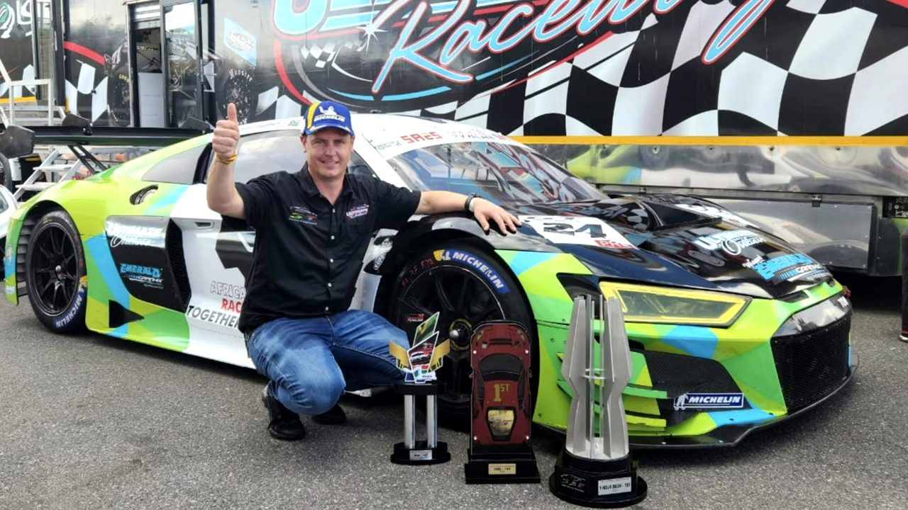
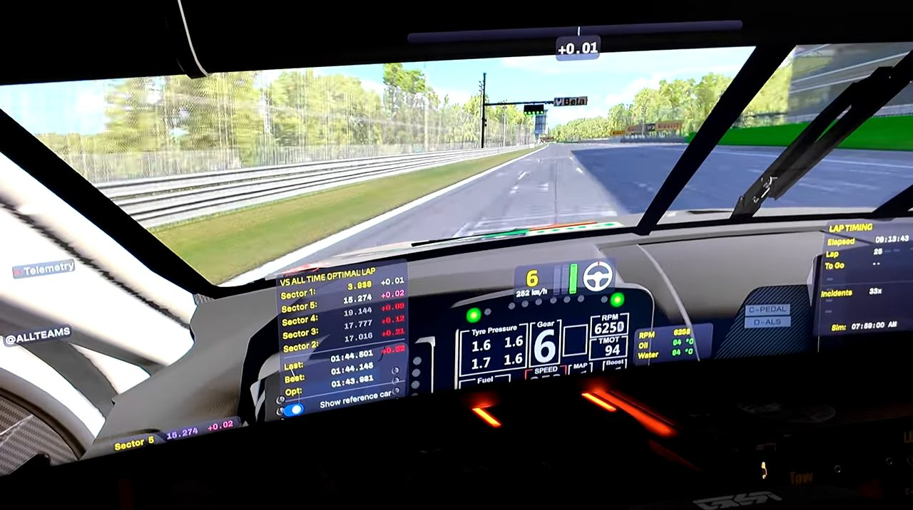

Motorsport / Mental Focus
Inside the world of racing: speed, discipline and mental focus
Eighteen-time national champion Michael Stephen on his engineering path through motorsport, and the lap-timer trick he used to stop his own mind from costing him time mid-corner.

Michael Stephen, born in Pretoria and raised in Port Elizabeth, holds 18 national motorsport titles and a cum laude master's degree in mechanical engineering, and treats both achievements as two sides of the same interest. He started karting at seven, working on his own karts before he could legally drive on the road, back when that was still normal for young drivers rather than something teams of paid mechanics handled for them. He is married with two children, and describes the actual discipline of his career less as chasing titles than as constantly rebalancing motorsport, family time and a demanding day job against each other.
From race shop to race seat
Stephen's day job has run parallel to his racing career rather than apart from it. He worked as a project manager at High-Tech Automotive in Port Elizabeth on the Mustang GT500 programme, cars built in South Africa for the American market, before moving, at the time of this conversation five months into the role, into running the motorsport operation for Scribante Racing. He is careful about how he frames the promotion: "You can't come in and make changes. You almost need to come in, observe, see people's strong points, see their weak points, and then focus on the strong points to make changes going forward." He describes the move in plainly personal terms too, past the job title: when a hobby becomes the actual job, and going to work every day is something to look forward to rather than endure, he calls that a win for everyone involved, not just himself.
Peter draws a direct line between Stephen's engineering background and why he rates him among the country's best race engineers as well as drivers: most drivers can watch a data trace and say roughly what happened, brake point, corner speed, but can't actually interpret why the car behaved that way, let alone what to change. Stephen can do both from inside the car itself, correcting his own setup rather than waiting on someone else to translate the problem. Co-host Luke, a racer and sim driver in his own right, gives a specific example from coaching: a driver comes in convinced the car was oversteering, but the onboard video shows the steering wheel held at 90 degrees through the whole entry, meaning the car was actually understeering, with only a brief snap of oversteer on exit, which is the part the driver's memory kept. Being able to see that gap between what a driver feels and what the car is actually doing, he says, is what separates a coach who can fix a problem from one who can only describe it. Peter's own path traced a similar arc from a different direction: a chemical engineering degree, a private pilot's licence taken up purely for fun, then a slow accumulation of ratings until a job offer to fly professionally arrived, a serious pay cut he took anyway and never regretted across 30 years in the cockpit.

The go-kart with caravan mirrors
Stephen and Luke raced against each other as children in the South African karting championship around 1990 and 1991, and both still remember one round in vivid, competing detail. Luke was leading with a lap to go when his engine cut out, leaving him crawling in the middle of the circuit. Stephen and another front-running racer, Ricky, arrived on him together and had to choose which side to pass on; Stephen checked behind him for traffic but happened to look the wrong way, missed Luke in his blind spot, and instinctively steered into the exact gap Luke was already occupying. The move ended Luke's round. It wasn't even the first time that season a blind spot had cost him: in round one, in the rain in Cape Town, Luke had been leading on the final lap, glanced back through a corner to check his gap, and spun the kart himself. After that pair of results, Luke had a set of caravan wing mirrors bolted to his go-kart as a running joke, on a class of vehicle that doesn't carry mirrors at all, which he says is a large part of why the whole episode is burned into his memory so precisely more than three decades later.
The lap timer that was working against him
The most specific piece of technique in the conversation is about something as small as a dashboard readout. Most racing displays show a delta: how far up or down you are against a reference lap, updated corner by corner. Stephen found that seeing himself a tenth up mid-lap changed how he drove the next corner, pushing him to protect or extend the gain rather than simply execute, which is exactly the moment small mistakes creep in. His fix was to switch the display from a running delta to a predictive final lap time instead: a single number showing what the lap would add up to if the rest played out the way the last one had.
"It just changes your mindset of how you approach the rest of the lap."
Stephen points to Lando Norris making a comparable change to his own dashboard during a season where he was struggling in qualifying, as a sign the same psychology holds at the top of the sport: even a Formula 1 driver with a full engineering department behind him can be undone by a display that keeps inviting him to protect a gap corner by corner instead of simply driving the lap in front of him. The fix in both cases is the same instinct Stephen applies to setup work generally, removing a variable that's quietly working against the driver rather than asking the driver to somehow think around it.

Late in the episode Stephen takes his own advice onto the studio's sim rig for a hot lap, working a banker lap in before pushing, the same two-lap rhythm he uses in real qualifying sessions: one lap to build tyre temperature and read the track, then a single committed lap where the predictive-time mindset actually gets tested, the same discipline whether the car underneath him is a race-prepped saloon or a simulator rig set up for a podcast segment.